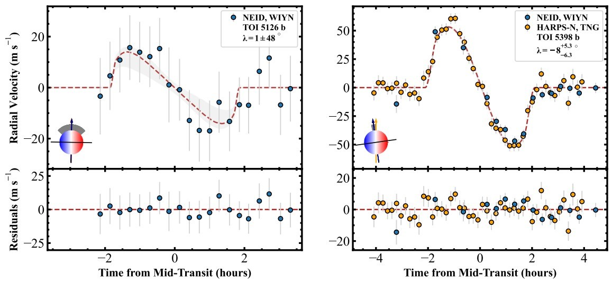

Dynamical Origins of Short-Period Giants (under construction)
2021-Present
Hot Jupiters, the shortest-period class of gas giants, are conventionally thought
to form through dynamically violent processes such as high-eccentricity migration.
Some of the most commonly referenced pieces of observational evidence for this are:
- The near-zero rate of nearby planetary companions to hot Jupiters
(see Steffen et al. 2012, Huang et al. 2016)
- The presence of large misalignments in the stellar obliquity distribution of hot Jupiters
(see Schlaufman et al. 2010, Winn et al. 2010, Albrecht et al. 2012)
However, the somewhat wider-orbiting counterparts to hot Jupiters, known as warm Jupiters, may
not share these properties, while their somewhat less massive counterparts, known as sub-Saturns,
may have a nearby companion rate similar to warm Jupiters but an obliquity distribution more similar
to hot Jupiters. My PhD dissertation research at IU aims to disentangle the origins of these short-period
giant planets via a combination of observational and numerical studies, which are detailed below.
Stellar Obliquity Measurements Via The Rossiter-McLaughlin Effect
Stellar obliquity, or the angle between the stellar spin axis and the orbit normal axis of its planet(s), is a unqiue
and informative indicator of a system's dynamical history. Despite decades of effort, it remains unclear whether spin-orbit
misalignment takes place during formation, with the protoplanetary disk present, or post-formation following
the disappearence of the disk.
The Rossiter-McLaughlin (RM) effect (Holt 1893, Rossiter 1924, McLaughlin 1924), which
takes advantage of the time-resolved spectral effects of an actively transiting or eclipsing body, presents a reliable method
to determine a system's projected spin-orbit angle $\lambda$. With additional information on the stellar inclination,
the true 3D stellar obliquity $\psi$ can be derived as well.
TOI-5143 (Radzom et al. 2024b, in prep.)
TOI-5143 is a hot Jupiter in a compact multi-planet system recently discovered by NASA's Transiting Exoplanet Survey Satellite (TESS)
mission, and is only the third of such systems to have its stellar obliquity measured. We use the Doppler Shadow
method of the RM effect to measure its stellar obliquity, finding it is well-aligned. Our result continues the trend of alignemnt
seen in previous
spin-orbit measurements for other hot Jupiters with nearby companions (e.g., WASP-47 and WASP-84), as well as the current census of RM measurements
for compact multi-planet systems. This reinforces the hypothesis that planetary systems are largely primordially aligned,
with misalignments being acquired in the post-disk phase due to dynamical evolution. Further, our measurement
demonstrates that some hot Jupiters must have quiescent origins, having avoided achieving the large eccentricities
that would have otherwise destroyed their companions and/or excited their obliquities during their path to their close-in orbits.
TOI-5126 and TOI-5398 (Radzom et al. 2024a, accepted to AJ)

Sub-Saturns, with masses intermediate of Neptune and Jupiter, represent an interesting population to study both the origins
of giant planets and the mechanisms by which the orbital axes of planets become misaligned with the stellar spin axes.
Despite decades of effort, the mechanisms by which the spin axis of a star and the orbital axes of its planets become
misaligned remain elusive. Particularly, it is of great interest whether the large spin-orbit misalignments observed
are driven primarily by high-eccentricity migration --- expected to have occurred for short-period, isolated planets
--- or reflect a more universal process that operates across systems with a variety of present-day architectures.
Compact multi-planet systems offer a unique opportunity to differentiate between these competing hypotheses, as their
tightly-packed configurations preclude violent dynamical histories, including high-eccentricity migration, allowing
them to trace the primordial disk plane. In this context, we report measurements of the sky-projected stellar obliquity
($\lambda$) via the Rossiter-McLaughlin effect for two sub-Saturns in multiple-transiting systems: TOI-5126\,b
($\lambda=1\pm 48 \degree$) and TOI-5398\,b ($\lambda=-24^{+14}_{-13} \degree$). Both are spin-orbit aligned,
joining a fast-growing group of just three other compact sub-Saturn systems, all of which exhibit spin-orbit alignment.
{\bf In aggregate with archival data, our} results strongly suggest that sub-Saturn systems are primordially aligned
and become misaligned largely in the post-disk phase, as appears to be the case increasingly for other exoplanet populations.
N-body Simulations of Short-Period Giant Systems
2021-2023
The longest-standing mystery in the field of exoplanets is the origin of short-period gas giants, as the first exoplanet
discovered around a Sun-like star was a hot Jupiter, 51 Pegasi b.
Hot Jupiters, the shortest-period gas giants, have conventionally been thought
to form only through dynamically violent processes such as high-eccentricity migration.
One of the most commonly referenced pieces of evidence for this is the
observed isolation of hot Jupiters, wherein these giants rarely host nearby planetary companions.
Such companions would have been cleared out during the violent migration process,
while giants undergoing less dramatic inward migration, such as warm Jupiters, may
more readily retain their nearby companions (see eccentric migration paradigm proposed by
Wu et al. 2023).
. Indeed, there is strong evidence for a dichotomy in the nearby companion rates, with warm Jupiters
often being found in compact multi-planet systems (e.g., Huang et al. 2016).
On the other hand, the wider-orbiting warm Jupiters are commonly found in compact multiple-planet
systems (Huang et al. 2016). This suggests that these giants have origins that are either completely independent of
hot Jupiters, or diverge during the dynamical evolutionary stages that take place after the
dissipation of the disk. In the latter scenario, giant planets may achieve a wide range of eccentricity
excitation in the post-disk phase, resulting in a spectrum of short orbital periods, eccentricities, stellar obliquities, and
companion retention (see the eccentric migration paradigm described in Wu et al. 2023).
Additionally, these migration-based formation scenarios are solely informed by the
architecture of our own solar system, which we now know to be the exception rather
than the rule. Instead, thanks to space-based transit and Doppler velocity surveys,
we find there is a widespread prevalence of close-in "super-Earths"
, which suggests that the inner regions of protoplanetary disks are more massive than predicted
from our solar system. These compact planets often exhibit a surprising
"peas in a pod" structure (Weiss et al. 2018), where they share similar spacing,
masses, and radii, with typical masses from a few to a few tens of Earth masses and orbital
periods from a few days to months. If massive enough, these planets may trigger
run-away accretion in situ to become gas giants in the inner region of the disk before
the surrounding gas dissipates. Assuming the progenitor systems are more compact
than observed Kepler multis, an in situ-formed giant should naturally trigger instability
and subsequent dynamical sculpting once the disk has vanished.

To this end, I am currently leading a project with collaborators Songhu Wang,
Bonan Pu, Malena Rice, and Dong-Hong Wu that tests the viability of
this scenario using N-body simulations. We study and describe
the dynamical consequences on compact multi-planet host systems which
contain an in situ-formed short-period gas giant. We find that in situ formation
naturally reproduces several known properties of hot and warm Jupiters, including
the companionship dichotomy. This is illustrated in the figure on the right,
which shows the period ratios of our simulated Jupiters with their nearest low-mass
companion after 10 Myr of evolution: the shortest-period giants are typically
much more isolated than others. We posit that a large fraction of these companions
to hot Jupiters are too distant and/or exhibit too high of mutual inclinations to be
detected efficiently, causing hot Jupiters to appear more lonely than they truly are.
Our paper (Radzom et al. 2023) will soon be submitted to the ApJ.
Parameterization of Stability in Hierarchical Multi-planet Systems
2021

Most Kepler-like systems contain more than two planets, with the average
instrinsic multiplicity predicted to be nearly 6 planets per star (Zink, Christiansen & Hansen 2019)
. As mentioned above, the majority of these systems appear to have a peas-in-a-pod
structure with similar period ratios between adjacent pairs and throughout the entire system.
While there is little analytical understanding of dynamical instability
in generalized high-multiplicity (N>3) systems, a number of semi-analytic
and empirical studies exist which focus on the relationship between the spacing
and stability of uniform systems. These studies are largely comprised of N-body
simulations of idealized Equal Mutual Separation (EMS) systems, for which the
instability timescale is well-parameterized by the spacing parameter K. Broadly, it is seen
that systems with smaller K values (i.e., smaller period ratios) are more likely
to undergo instability (and on shorter timescales), which is consistent with the
paucity of Kepler planets with period ratios less than 3:2. Wu et al. 2019
expanded these studies by running N-body simulations of non-EMS peas-in-a-pod systems,
finding that the lower limit of the instability timescale is determined by the minimal
value of the spacing parameter within the system.
For in situ-formed short-period giants, a phase of post-disk dynamical instability
may be key to sculpt the architectures we see today. In order to build a deeper
understanding of this picture and link progenitor systems to what is currently
observed, it will be important to characterize the primary
drivers of instability in multi-planet systems containing a hot or warm Jupiter.
Thus, I am using N-body simulations of high-multiplicity, compact, non-EMS progenitor
systems containing a close-in Jovian-class planet to parameterize instability in hierarchical multis.
Preliminary results suggest that the harmonic mean of the K values within these types of systems is
the best indicator of the instability timescale.